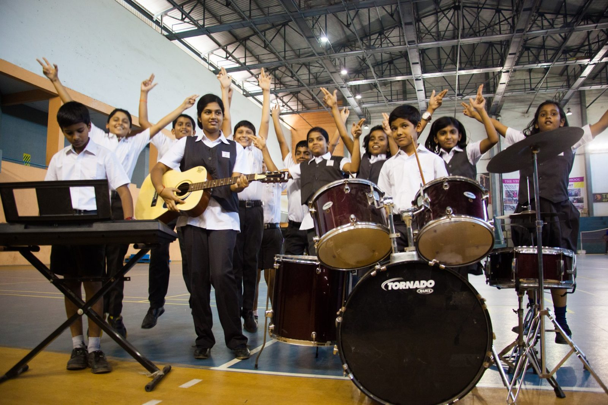

ART & CULTURE

“One can think well , love well, sleep well if one dines well”
We believe that right food not only acts as nourishment to the body, but also stimulate the intellect of the mind. Expert Chefs cook tasty, delicious and nutritious multi-cuisine food as per the schedule in the ultramodern and hygienic kitchen. Both vegetarian and non-vegetarian, is prepared with utmost care under the guidance of qualified dieticians. On demand, we also serve specific food prepared as per the dietary needs of the student based on his/her health conditions.
Apart from preparing food on a day to day basis, our team of chefs and catering experts are capable of delivering high quality food , be it a simple buffet or a lavish international symposium, depending on the need of the occasion like Onam, Pongal etc and make it a truly special event.